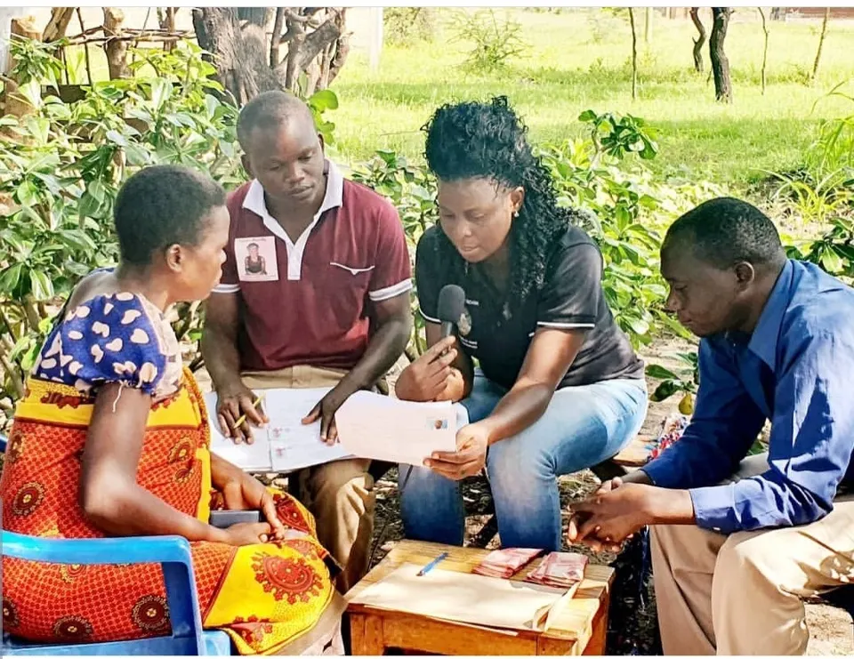

Agri-Connect Tanzania
Mission
Mission
To support young people to be creative and able to employ themselves and become independent
“Support young people to support themselves” by:
- Changing mindset
- Capacity building
- Financial support

Gospel singer, and founder of the youth organisation Agri-Connect Tanzania
Agri-Connect Tanzania
To support young people to be creative and able to employ themselves and become independent
“Support young people to support themselves” by:
